Adding a PPA
Changing Desktop Environments
Creating and Extracting Zip files
File Encryption
Getting Software
Held Packages
Installing Software
Linux Equivalents of Windows Programs
Lite Software
- Change Repository Location
- Install Software
- Remove Software
Lite Tweaks
- Autoremove Packages
Lite Updates Notify
Uninstalling Software
Updates
- Software Updates Country Location
Wine - Run Windows programs
Getting Software
Getting software on Linux is easier than on Windows. The vast majority of programs that you may want/need to install are all centrally located in what are called software repositories (repos). Rather than searching the web, downloading programs from various sites (some of which may not be reliable), running the installer, rebooting, etc., available software is all centrally located and available for installation in seconds. The packages/(programs) in the repositories are tested, approved for inclusion in the repos and securely signed to insure their validity.
There are a few common methods for installing and removing software. Linux Lite comes with Lite Software and Synaptic Package Manager applications. When the program you want is not listed in Lite Software and you already know its name, Synaptic Package Manager makes installing easy.
IMPORTANT: Before you run Install/Remove Software for the first time, read this first. Then come back to here to learn how to install and remove software.
Installing Software
1. Click on Menu, System, Install/Remove Software and enter your password when prompted.
2. Make sure All is selected in the left pane and in the Quick Filter or spy glass: type in your search query. In this example we will search for the 'audacious' music player.

3. Double click on the package you want to install.
4. Some software will ask you to Mark additional required changes? These are also known as dependencies and are required for the program to function properly.
5. Click on Mark. Now hit the Apply button on the Synaptic toolbar. The software will install and a Menu entry will be created in the relevant Menu category. For audacious the Menu category would be Multimedia.
6. Go to the Menu and your new software will be there under the relative Category. An alternative way to find your new software is to click on Menu, Accessories, Application Finder. Type your program name in the Search box and the result will display on the right. Double click on the program name and it will launch for you.
Uninstalling Software
1. Uninstalling software is the reverse process of installing software in the Synaptic Package Manager. Type the name of the software into the Quick Filter or the spy glass box:
2. Right click on the software and select Mark for Removal. Now hit the Apply button on the Synaptic toolbar and your software will uninstall. Be very careful with this process as you can inadvertently uninstall crucial system software. If you have any doubts, please search the net first to see if it is safe to uninstall the software. Synaptic is pretty good at warning you should there be any potential problems.
Updates
Keeping Linux Lite up to date is a simple process.
At the top of your Menu, you will see Install Updates.
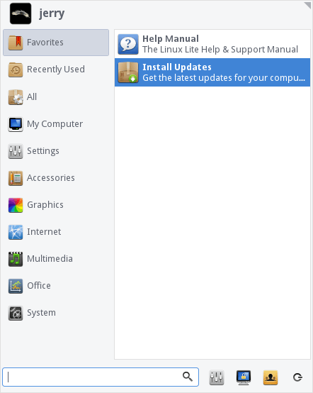
We've made the update process as simple as possible. Simply click on Install Updates and you will be asked for your password. The program will then search for updates and if it finds any it will ask you if you want to continue.
Important: On rare occasions the update process may pause to ask you if you want to replace an existing configuration file with a new one from the package maintainer. If that happens, always select the default answer of "N" for NO. You want to keep the existing configuration file, not replace it.
(Note: The update process updates all software on the system that came from the repos. Unlike in Windows, there is no need to update individual software programs manually. When you run Install Updates, that will update all packages that have updates available for them.)
Packages that have been kept back
Sometimes when performing Install Updates, you will notice that there are held packages. Why does this occur?
The reason those package are kept back is because they either depend on extra packages not already installed or they are waiting on compatible software from other sources. In other words, those programs are waiting on other software to become available. When the other software becomes available, the held packages will come out of hold and be included in your regular updates. This occurs because software is created by different people and comes from different sources, those different projects must be compatible in order for the software to function properly.
If these held packages are installed prematurely, it could cause that program to become unstable or even worse, unusable. You may also inadvertently destabilize your system. The safest course of action is to wait until the other packages are ready. Then Install Updates will take care of all that for you and merge the software together.
There are some exceptions to this however. In the above example, we can see there are held packages for LibreOffice. In the current version of LibreOffice there is a bug which prevents users from being able to save files. Here is where the exception takes priority. Information gathered from the community states that an upgrade of LibreOffice fixes this bug. So we need these held packages.
Close Install Updates if you have it open. Now go to Menu, System, Install/Remove Software. Click on Installed (upgradeable) in the left pane, then select all the packages that you want to upgrade, in this example all the libreoffice packages. Now click on Apply and let the upgrade run its course.

In this particular example, installing the held LibreOffice packages fixes a known bug. This was first tested on a working system, then the public was notified that it was safe to do.
GOLDEN RULE: If your system if working fine, do not be tempted to force installation of held packages, if it's working you don't need it. This includes held kernel updates. Remember the old saying, "If it ain't broke, don't try to fix it".
Change your Software Updates Country Location
To ensure that you get updates and software downloaded as fast as possible, try selecting servers from locations closer to you. In the following tutorial we will show you how to do this.
Click on Menu, System, Install/Remove Software and enter your password.
Synaptic Package Manager will open up, click on Settings, Repositories.
The Software Sources window will pop up. From the Download from: drop down box, select Other...
A Choose a Download Server box will pop up. From here select your country, and then a server, preferably an Ubuntu server if it is listed or another server if an Ubuntu server is not in the list. Click on the Choose Server button once you have made your selection. Now click on Close in the Software Sources window.
In the top left of the Synaptic Package Manager window, click on the Reload button. This will change all the software sources to your location for faster downloads.
The following window will appear, then close when it has finished.

You should now have faster downloads for updates and software installs in Synaptic Package Manager from a location much nearer you. Click here to learn how to install and remove software.
Lite Software
Lite Software is a graphic user interface (GUI) tool to easily install and remove popular software in Linux Lite. It is a convenient way to gather the most commonly used applications together and present them to the user.
The applications listed in Lite Software are not built-in with Linux Lite. Your computer must be connected to the internet in order to download and install these applications. If the application you are looking for is not listed in Lite Software, please use Synaptic Package Manager to search for it and install it.
Lite Software - Change Repository Location
Before installing new applications, although completely optional, it is recommended to change the Software Updates Country Location and the Repository Location - the servers from which you download built-in Lite applications updates.
For a list of locations for Linux Lite Software application updates, click here and choose a location close to you.
Open your home folder and navigate to /etc/apt/ right click on the sources.d folder and Open as Administrator.

Double click on the file linuxlite.list and copy and paste the new repository link of your choice from REPOSITORY MIRRORS replacing the existing line. Be sure to change the word repo to the codename from that Linux Lite Series eg. replace repo with citrine. See the notes on the Download page for Series information. Save and Close the file.
Now double click on the file linuxlite.list.save and copy and paste the same new repository link over the existing entry. Be sure to change the word repo to the codename from that Linux Lite Series eg. replace repo with citrine. Save and Close the file.
Next time you run Menu, Favorites, Install Updates you will get Lite Software application updates from your newly selected location.
If for some reason that new repository selection does not work, choose another location.
Lite Software - Install Software
Installing some of the more widely popular programs on Linux Lite like Chrome, Dropbox and Skype is just a few simple steps on Linux Lite.
Go to Menu, System, Lite Software.
Enter your password and click OK.
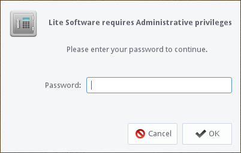
Next you will be shown the Update Software Sources window, click Yes to continue.
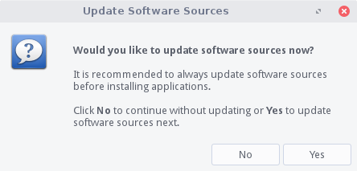
Sources will be updated:
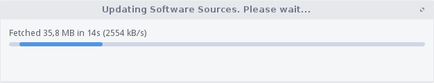
Once the sources have been updated, the following window will appear, select Install Software and click OK.
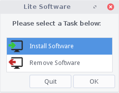
Next, you'll see the following window pop up. Select each application by holding down the Ctrl key. You may choose and install more than one package at a time if you like. In this example we'll choose to install, Instant Messenger, Password Manager and Torrent Software. Next, click the Install button.
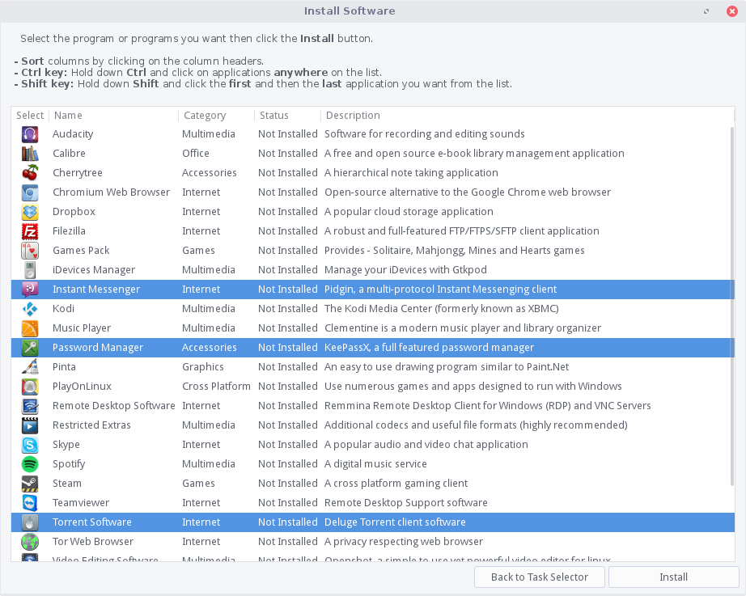
In the next dialog, you'll be shown which applications you've selected to install. Click Yes when ready.
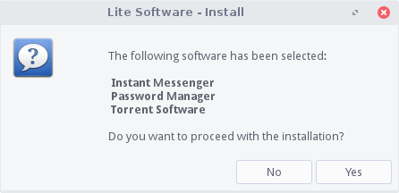
The programs will now be downloaded and installed automatically for you. This can take anywhere from a few seconds to a few minutes depending on how many applications you've selected, the size of the program/s and the speed of your internet connection.
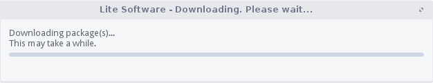
When the install is complete, you will get a confirmation like the following.
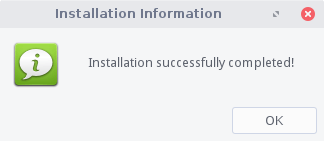
The Lite Software window will reappear at the end in case you want to perform another task. If you have finished, click Quit.
Lite Software - Remove Software
Removing Additional Software in Linux Lite is just a few simple steps.
Click on Menu, System, Lite Software.
Enter your password and click OK.
Next you will be shown the Update Sources window, always answer Yes.
Sources will be updated:
Once the sources have been updated, the following window will appear, select Remove Software and click OK.
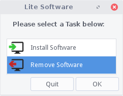
Next, you'll see the following window pop up. Select each application by holding down the Ctrl key. You may choose to remove more than one package at a time if you like. In this example we'll choose to remove, Instant Messenger, Password Manager and Torrent Software. Next, click the Remove button.
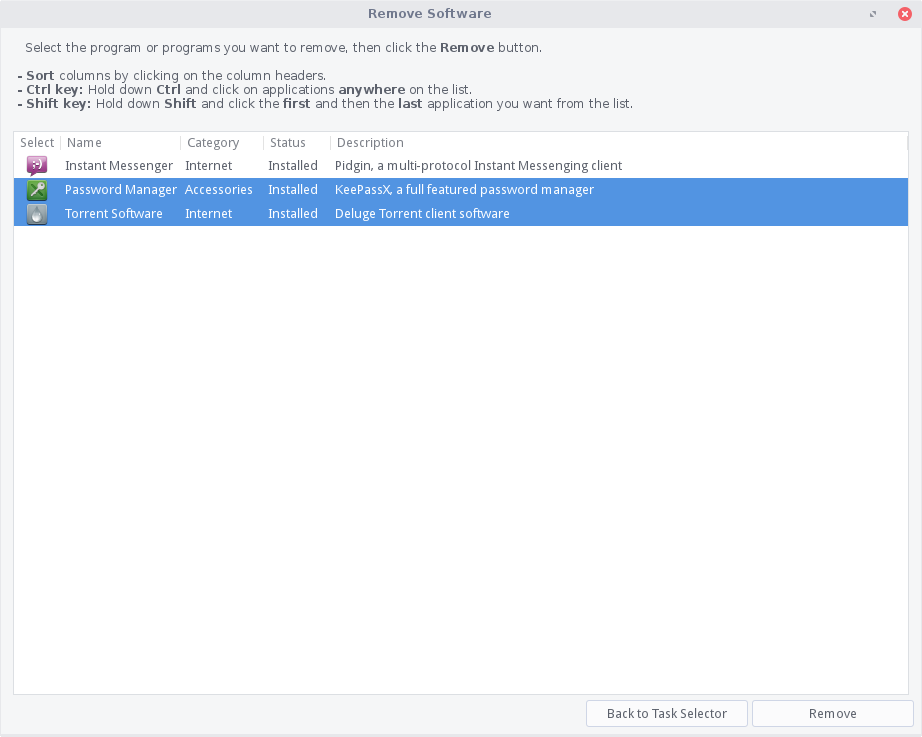
In the next dialog, you'll be shown which applications you've selected to remove. Click Yes when ready.
The programs will now be removed automatically for you. This can take anywhere from a few seconds to a few minutes depending on how many applications you've selected and the size of the program/s.
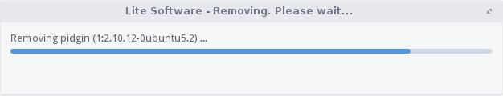
When the removal process is complete, you will get a confirmation like the following. Click OK.
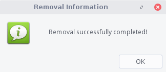
The Lite Software window will reappear at the end in case you want to perform another task. If you have finished, click Quit.
Linux Equivalents of Windows Programs
The following is a community compiled list of Linux equivalents of Windows programs.
Most of these programs can be installed via Menu, System, Install/Remove Software. In the Linux column, you can click on any of the links to find out more about that piece of software.
Thank you to bitsnpcs and the rest of the community who contributed here.
Office & Design
Internet Applications
| Windows | Linux |
| Internet Explorer | Firefox, Chrome, Opera, Konqueror, Midori |
| videoGET | Minitube |
| Microsoft Outlook | Thunderbird Kontact, Zimbra Desktop, Evolution |
| MSN Messenger | Pidgin, aMSN, Kopete, Emesene, Gabber, Psi |
| Microsoft Netmeeting | Ekiga |
| eMule | aMule |
| uTorrent, Azureus | Transmission, Ktorrent, Vuze, Deluge, qBittorrent, uGet |
| Skype (VoIP) | Skype, Ekiga, Jitsi, Google Hangouts |
| CuteFTP, WS FTP | FileZilla, KFTPgrabber, FireFTP |
| mIRC | Xchat, Pidgin, Konversation |
| UltraVNC, Remote Desktop | rdesktop, NX, TightVNC, x11vnc, SSH, Synergy, Vinagre |
| Forte Agent | Pan |
Multimedia Applications
| Windows | Linux |
| Adobe Photoshop | GIMP, GIMPshop, Krita |
| Adobe Photoshop Elements | F-Spot, KPhotoAlbum, gThumb, Gwenview, digiKam |
| Corel Draw, Adobe Illustrator | Inkscape, Xara Xtreme |
| Microsoft Paint | Tux Paint, KolourPaint |
| ACDSee, Irfanview | XnView, Mirage, gThumb, GQview, Gwenview, Ristretto, nomacs |
| 3D Studio MAX, Maya | Blender, K-3D, Softimage, Maya |
| Windows Movie Maker, Adobe Premiere | Kdenlive, Cinellera, Kino, LiVES, AviDemux, PiTiVi, OpenShot |
| TMPGEnc DVD Author, ConvertXtoDVD | DeVeDe, Bombono, Handbrake, Q DVD Author |
| Videora | Thin Liquid Film |
| Windows Media Player | VLC, Totem, Kaffeine, xine, MPlayer, QMPlay2, Rhythmbox |
| Winamp, iTunes | Rhythmbox, Amarok, Banshee, Audacious, aTunes |
| Cubase, CoolEdit, Cakewalk | Ardour, Audacity, Beast, GNUsound, Rosegarden |
| NoteWorthy Composer | MuseScore, LilyPond |
| Guitar Pro | TuxGuitar, MuseScore |
| MP3Tag | EasyTAG, Puddletag |
CD/DVD Recording
| Windows | Linux |
| Nero Burning ROM, Alcohol 120% | Brasero, K3b, X-CD-Roast, Xfburn |
| UltraISO, PowerISO | ISO Master, AcetoneISO, CDemu |
| Daemon Tools | CDemu |
Server & Networking Applications
| Windows | Linux |
| Microsoft IIS | Apache, lighttpd, Zope, thttpd, Yaws, nginx |
| Serv-U FTP Server, Filezilla FTP Server | vsftpd, Pure-FTPd, ProFTPD |
| File/Printer Sharing | Samba |
| Microsoft Exchange | Zimbra, Open-Xchange, Citadel |
| Microsoft Sharepoint | KnowledgeTree, Open-Xchange |
| Small Business Server | ClearOS, Zentyal, SME Server |
| NetLimiter | L7-filter, MasterShaper, trickle, Bandwidth Arbitrator |
| PA Server Monitor | ZenOSS, Nagios, Zabbix |
| Inssider | LinSSID |
| Norton AntiVirus, McAfee | ClamAV, Avira, AVG, Avast |
| ZoneAlarm, Sygate Firewall | Firestarter, FireHOL, Guarddog, Gufw, KMyFirewall |
Utilities
| Windows | Linux |
| Norton Partition Magic | Gparted, Qtparted, Parted Magic |
| Norton Ghost | Clonezilla, Partimage, g4u, dd, Redo Backup, qt4-fsarchiver, TimeShift |
| Winzip, WinRAR, 7-zip | File Roller, Ark, Karchiver, 7-Zip, Xarchiver |
| Capsa Network Analyzer | Wireshark, Ethereal |
| Bitvise Tunnelier | Gnome SSH Tunnel Manager, HotSSH |
| FreeFile Sync | FreeFile Sync, rsync, rsnapshot, duplicity, ZBackup, Back In Time |
| Dragon Naturally Speaking | Simon |
Please report any dead links from above here.
Wine - Run Windows programs

Wine application is a compatibility layer capable of running many Windows programs in Linux.
Software programs are designed for different operating systems, and most won't work on systems that they weren't designed for.
Windows programs won't natively run in Linux because they contain instructions that the system can't understand until they're translated by the Windows environment. In that same way, Linux programs won't run under the Windows operating system because Windows is unable to interpret all of their instructions.
Through Wine's compatibility layer, when a Windows program tries to perform a function that Linux doesn't normally understand, Wine will translate that program's instruction into one supported by Linux.
More information can be found here - https://www.winehq.org/.
Credit to ralphy for this article.
Lite Tweaks
Lite Tweaks is a program to customize, optimize and clean up your system. Used periodically it can do things like clean out various cached files, empty the trash, remove old kernels from the system if new ones are installed, remove old dependency packages no longer needed and more, freeing up additional space in your hard drive.
Lite Tweaks can be found under Menu, System, Lite Tweaks.
Once opened, the Lite Tweaks window features multiple tasks, alphabetically organized by their Name by default. The Description column provides information related to the task(s) to be performed. Users can select either a single or multiple tasks for execution. They will be executed in sequential order until every selected task has been completed.
Simply select the tasks you want to complete and click on Begin.
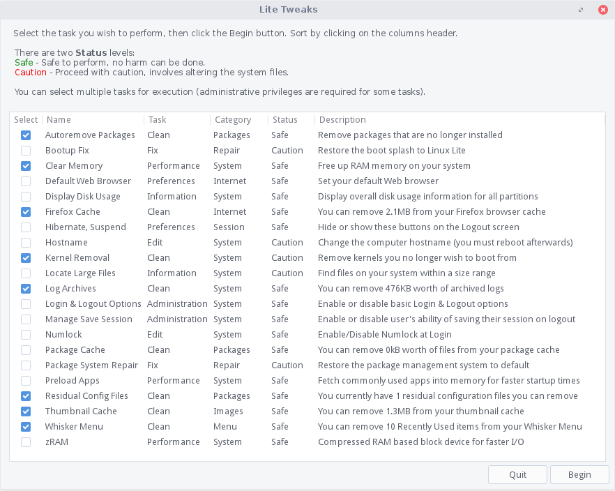
Some of the tasks in Lite Tweaks require administrative privileges for execution, hence you will be prompted for your password when needed.
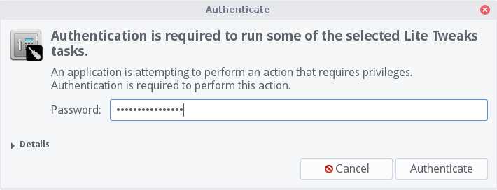
Lite Tweaks dynamically loads tasks relevant to your own system. For example, you may have multiple web browsers in which the web cache may be cleared as shown below.
The tasks to clear the web cache will appear in Lite Tweaks only for web browsers installed in your system and only if there is web cache to be cleared. After cleaning the browser's cache from those shown above, Lite Tweaks no longer display the tasks related to web browsers cache until there is cache to be cleared once again.
Another example, let's use Lite Tweaks kernel cleaner to remove an old linux kernel. Select Kernel Removal, then click on Begin.
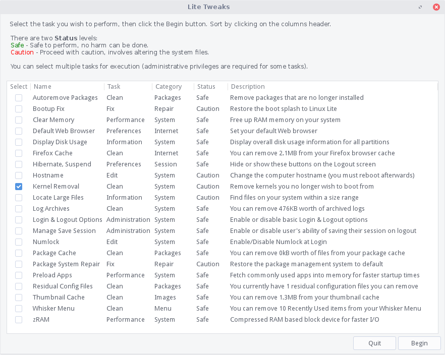
Enter your password and click OK.
The kernel cleaner will only display the kernels that are not currently in use. To remove a kernel, make sure to select the "image" and "header" files that correspond to the version number of the kernel, then click Remove.
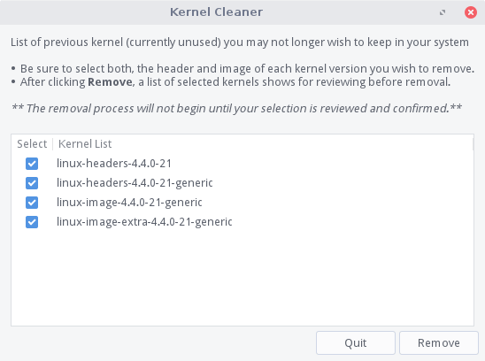
A confirmation box will pop-up. Click Yes if you are sure you want to proceed with the kernel removal.
Your kernel(s) will then be removed. (This may take a few minutes.)
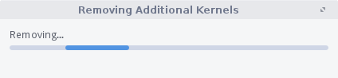
Upon completion, click OK to close the window.
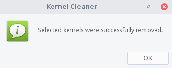
When selected tasks have completed, you'll be returned to the Lite Tweaks main window.
Lite Tweaks - Autoremove Packages
Autoremove Packages is used to remove packages that were automatically installed to satisfy dependencies for some packages and that are no more needed. This task requires administrative privileges for execution.
Lite Updates Notify
Lite Updates Notify is an application first introduced with Linux Lite 3.4. It provides desktop notifications to inform users when new updates are available for the system. It features a simple-to-follow interafce that allows users to control how often should it check for updates. Lite Updates Notify is disabled by default in Linux Lite.
To enable updates notifications, open Menu, Settings, Lite Updates Notify. Click Authenticate and enter your password when prompted to do so. Administraive privileges are required to configure schedules.
Select the desired option depending on how frequently you would like Lite Updates Notify to check for updates and click on Set. You can also double-click any of the available schedules instead.

A confirmation box will pop-up once the defined schedule is set.
The Schedule column in Lite Updates Notify main window, hints which of the available schedules is currently active.
Lite Updates Notify will check for new updates on shcedule as defined by the user. If no new updates are available since the last time updates were installed in the system, Lite Updates Notify will notify that the system is up to date, once. No further notifications are displayed up until new updates become available once again.
To customize how notifications appear on your screen, see Menu, All Settings, Notifications to define notifications theme, timeout, position on the screen and opacity. You must restart the session (logout and login) for notifications settings to take effect.
Adding a PPA
A PPA is a repository containing one or more applications. These are often set up for new software programs or updated versions of some applications. To add a new PPA to your system, follow the guide below.
Go to Menu, System, Install/Remove Programs. Enter your password when asked.
Go to Settings, Repositories.
Click on the Other Software tab and click on the Add (bottom left) button and paste into the box the address of the PPA. In this example, we are going to add the Gimp PPA to our system. Now click on Add Source. To finish, click on Close. You'll be prompted to put in your password. The sources list will reload and your new PPA will be loaded.
Search for your application in the Search box, in this example Gimp, and then double click on it to install the program. Click on the Apply button at the top of the window, and follow the on screen intructions.
File Encryption
In todays world, security of your personal files is important. Whether your transporting documents on a USB drive or emailing sensitive information to a friend, colleague or company, encryption is a necessary security measure.
1. First we need to install the encryption software, in this example we'll use mcrypt. Encryption algorithms include DES, Blowfish, ARCFOUR, Enigma, GOST, LOKI97, RC2, Serpent, Threeway, Twofish, WAKE, and XTEA.
Open a terminal and type:
sudo apt-get install mcrypt -y2. Once mcrypt is installed, we'll set a custom right click action in our file manager to make encryption of files super easy. Open up your home folder, click on Edit, Configure custom actions.
3. Click the plus + button on the right and enter in the following information, in the Command box type in: x-terminal-emulator -t "Encrypt file..." -e "mcrypt %f"
Click on Appearance Conditions tab and tick every box except Directories.
4. Go back to the Basic tab and click on the No icon button and browse to Status Icons, and select the changes-prevent icon and click on Ok, then Ok on the next box.

Your Custom Actions box should now look like this:
5. Now we need to set up the Decrypt option. Repeat step 3 only this time enter in the following information, in the Command box type in: x-terminal-emulator -t "Decrypt file..." -e "mcrypt -d %f"
Click on Appearance Conditions tab and only tick the Other Files box, leave the rest unticked.
6. Repeat step 4 only this time select the changes-allow icon. The click on Ok, then Ok on the next box.
7. Your Custom Actions box should now look like this:
8. Click on the Close button on the Custom Actions box.
Now we're ready to encrypt a file (only files can be encrypted with this method, not folders)
9. Right click on a file and select Encrypt file.
10. A window will pop up asking you to type in a password, it will then ask you to enter the same password again. Choose a good strong password, a mixture of letters, numbers and characters that you can easily remember.
You can now delete the unencrypted file permanently. Here you will see we have a new file with the letters '.nc' attached to the end of it signifying that the file is now encrypted.
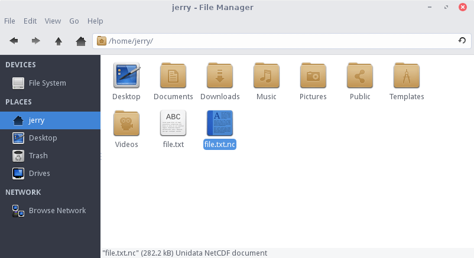
11. To decrypt the file later, right click on the file and select Decrypt file.
12. A window will pop up asking you to type in a password. Enter the password you created in step 10.
As you can see our file is decrypted and ready to view.
If you make any changes to the decrypted file, you need to delete the existing encrypted file and re-encypt the changed file.
Creating and Extracting Zip files
Sometimes we may have a collection of pictures to send someone over email. Good practice is to zip these files up so that the overall size is much less. The following is an example of how to zip files and folders.
Linux Lite supports creation and extraction of these archive file types using the File Roller program: .zip .rar .tar .tar.gz .tar.bz2 .7z
Archive files can be created/extracted through the right-click menu in the file manager, or by going to Menu, Accessories, Archive Manager and selecting files to archive or extract from there.
Creating a zip file
From within the file manager, right-click on any file or folder and select Create Archive. The following example will use a file named "file.txt".
A new window will pop up. From here, type in the Filename, eg. "file". Use the drop-down box next to the filename to select the zip extension as the archive type. Choose a location to save the file in, then click on the Create button.
We now have a file called file.zip
Zipping up multiple files
Best practice here is to place all the files you want to zip up into a folder. In this example we have a folder called holiday and inside 4 files.

Go back to your home folder and right click on the folder containing the files you wish to zip up. Right click the folder and select Create Archive
A new window will pop up. From here, type in the Filename of the file (eg. holiday>) and select zip for the archive type extension. Choose a location for the file, then click the Create button.
We now have a zip file called holiday.zip
Extracting Zip files
Right click on the zip file and select Extract Here
We how have a folder called holiday, with our 4 files inside of it.
Using Archive Manager (File Roller) from the Menu to create a zip file.
Go to Menu, Accessories, Archive Manager to open the File Roller program.
The program will open up to a blank window like below. To create a zip file, click the "Create New Archive" button.
In this example, we'll make a file named "Testing", choose the ".zip" extension type, use the "Location" box to point to where we want to save the files we are zipping, then click "Create".
A window will pop-up where you can add files to your zip archive.
Click Add Files, then in the following window navigate to the files you want to archive and place a check mark in the box(es) next to those you want to include. Once all items are checked off, click Add.
You will then see the files that were added in the Archive Manager window and the zip file will show up where you instructed it to be created. You may close the Archive Manager at this point if you are done.
Using Archive Manager (File Roller) from the Menu to unzip a zip file.
Go to Menu, Accessories, Archive Manager, click Open and navigate to the archive file you want, then click Open again.

The files will be displayed in the Archive Manager.
Click Extract and direct them to the location you want them extracted to on the next window.
A pop-up window will notify you that the extraction is done.

If you click Show the Files, it will open the file manager to display their location.
Changing Desktop Environments
This distro is a heavily modified version of the XFCE desktop environment. However, being GNU/Linux based allows people the freedom to modify their system as they see fit. There are numerous desktop environments in GNU/Linux. Including but not limited to:
- Budgie
- Cinnamon
- Enlightenment
- Gnome
- KDE
- LXDE
- LXQT
- Mate
- Pantheon
- Razor-qt
If you desire to install another desktop environment, we cannot provide specific instructions on how to do this. There are far too many variables involved and much can go wrong. This kind of system modification is best left to experienced Linux users. The whole philosophy behind Linux Lite is to provide new users to a Linux based operating system, an easy to use, functional desktop experience. Our support time is better spent dedicated to helping existing Linux Lite users on the XFCE desktop.